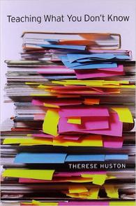
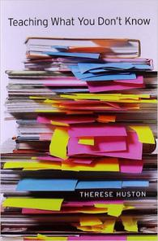

Software Carpentry:
Lessons Learned
Greg Wilson
Software Carpentry Foundation
gvwilson@software-carpentry.org
September 2016

Basic lab skills for scientific computing
What We Teach
Unix shell
Git / GitHub
Python (or R)
SQL
Make
What We Actually Teach
Unix shell
Git / GitHub
Python or R
SQL
Make
automating tasks
tracking and sharing
modularization
structured data
making work reproducible

If you build someone a fire, you'll keep them warm for a night. If you set someone on fire, you'll keep them warm for the rest of their life.
— Terry Pratchett
Since January 2012
Over 820 two-day workshops
780 instructors
23,000 learners
…and we just hired our sixth full-time staff member

Where We've Been

Who We Are
How We Grow
- Turn learners into instructors
-
Train them
- Common goals and vocabulary as important as skills
-
Institutional partnerships
- Single source of funding = single point of failure

Lesson #1
Most scientists think of programming
as a tax they have to pay
in order to do science.
And those who don't are not representative
of the other 85%
(Hannay et al 2009)
Lesson #2
The curriculum is full.
And even if it wasn't:

Lesson #3
…for some value of "we".

 

Lesson #3
…for some value of "we".


Examples
Practice works best for facts, worked examples for skills
Peer instruction beats lecture
Lesson #4
Most people would rather fail than change.
I.e., they would rather ignore evidence
than change their working practices or business plan.
Sound familiar?

Example
Stefik & Siebert: "An Empirical Investigation into Programming Language Syntax." ACM Trans. Computing Education, 2013(11), http://tinyurl.com/nwit-syntax
We first present two surveys conducted with students on the intuitiveness of syntax, which we used to garner formative clues on what words and symbols might be easy for novices to understand. We followed up with two studies on the accuracy rates of novices using…Ruby, Java, Perl, Python, Randomo, and Quorum. …[W]e found that languages using…C-style syntax (Perl and Java) did not afford accuracy rates significantly higher than a language with randomly generated keywords, but that languages which deviate (Quorum, Python, and Ruby) did.
But Don't Take It From Me…
Lesson #5
Programmers can rationalize anything.

This is actually a pretty good tool
…once you normalize for effort invested in mastering it
It's our fault version control can't handle it
Lesson #5
Programmers can rationalize anything.

Git is as horrible as it is useful

"The law, in its majestic equality, forbids the rich and poor alike to sleep under bridges, to beg in the streets, and to steal bread."
"Today's software tools let every scientist spend her entire life trying to install SAMtools on a Mac."
A Few More
-
Video lessons: just say no
- Maintenance >> construction
- So many interesting things we could do instead…
-
Never teach alone
- Jugyokenkyu and Edthena
- See "interesting" above
-
Never learn alone
- Writing it down helps
- Writing it down together helps more
A Few More
-
Live coding >> slides
- The mistakes are the pedagogy
-
Lots of reasons to volunteer
- Make the world a better place
- Teaching to learn
- Self-defense
- Make new friends
- Boost career
Lesson #11
We are smarter and stronger together.
- Build lessons together
- Democracy is the least productive form of governance…
- …except for all the others.

Conclusions
Hell, I don't know…
But I'd be happy to take questions